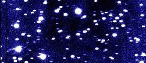
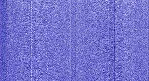
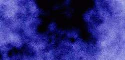
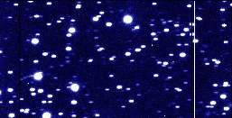
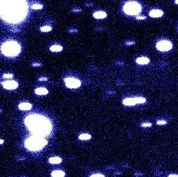
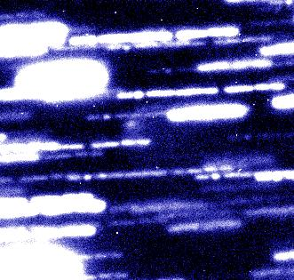

These are the typical steps through which a CCD image has to go.
1. Raw imagesA CCD is an electronic detector constituted by many square photosensitive "pixels". When a photon (light particle) hits one of these pixels, the information is stored in the pixel as an electron. If the object being observed is very faint, the CCD will be exposed for a long time in order to collect enough electron per pixel. Finally, the CCD is read: the number of electrons in the lower left pixel is read and sent to a computer for further analysis and display, then all the electrons from the last line of pixels are shifted by one pixel, and the lower left pixel is measured. That process is repeated until all the pixels from the 1st line are read out. The whole image is then shifted down by one line, and the the new first line is read out. Eventually, all the lines will be shifted down and read out. |
 Figure 1: raw CCD image, obtained with a Tektronics 1024; refer to the bottom of the page for the technical details. The number of electrons read from the CCD have been code using a false color blue scale: black corresponds to the minimum count; white to an arbitrary higher value. The image was actually taken through a R filter. ( larger 72k jpeg) |
The corresponding raw image presents all the defects and artifacts of the CCD and the telescope. Depending on the CCD, this raw image can look quite bad, as illustrated at Fig.1.
THIS is the data. For us, astronomers, these raw images are the most valuable, purest form of data. If anything goes wrong, or if we think we discovered something, we will always come back to the raw data and check if it is there, before we started cleaning and calibrating the images. However, the raw image still contains all the artifacts, that have to be identified and possibly corrected.
In addition to many stars (slightly trailed), one can see a comet (don't see it? keep reading), and a whole collection of CCD and telescope artifacts that I will discuss now:
These are the most basic steps; every image published should have
received the following corrections.
2.1. Bias SubtractionThe bias is caused by a constant voltage applied to the CCD detector; ideally it should appear as a constant value added to the image. In practice, it looks more like Fig.2. |
 Figure 2: typical bias frame for the same CCD. (large 81k jpeg) |
Even when left in the most complete darkness, CCDs will
accumulate electrons that will eventually be counted a
"light" when the image is read. This is a temperature effect:
electrons can be kicked out of place by the heat from the CCD
itself; this is the dark current In the case of
amateur CCDs, this phenomena is very important, and has
absolutely to be corrected for. This professional CCD is
cooled to -100C (about -200F) to minimize the effect of the
dark current: even during very long exposures, the total dark
current accumulated remains negligible.
2.3 Flat FieldAll the pixels making the CCD surface are almost similar; however, they present some variations of sensitivity: some of them will convert the light photons more efficiently into electrons than others. Also, the filters and lenses that are between the sky and the CCD can accumulate some dust particle, that will cast a shadow on the CCD. The result of all these effects is that the image of a uniformly illuminated target (like the sky during the day or twilight, or the inside of the dome) will not appear uniform on the CCD. To correct this effect, we take several images of a flat field (uniformly illuminated), average them, and use them to map the sensitivity variations across the CCD (the flat field corresponding to Fig.1 is displayed in Fig.3). The bias- and dark-subtracted images are then divided by the flat-field, leading to the reduced image; the result for one image is shown in Fig.4. |

Figure 3: Flat field corresponding to Fig.1. The
variations from black to white indicate changes of sensitivity
of 10% . (larger 28k jpg)
 |
|

Figure 5.a: Field around comet Helin-Alu; this image is the combination of 11 images totalling 6600sec exposure. |

Figure 5.b: Combination of the same images, shifted to compensate for the motion of Comet Helin-Alu, which is visible just in the center of this image. |
Tue Dec 10 19:09:33 1996
{kind=link}
{kind=link}
{kind=link}
{kind=link}